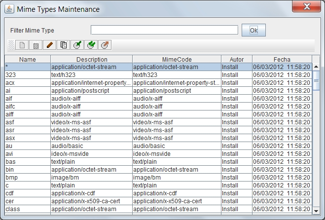

Mime Types List
By selecting the option to manage Mime Types, will appear the form "list of Mime Types". This form allows you to maintain all the system Mime Types.
At the time of storing the document should be set its MIME type, so that browsers and other programs can handle and open the file correctly. Documentation and lists of mime types can be found at: Wikipedia or IANA MIME Media Types
To filter the Mime Type or list of Mime Types you want to review, just enter part of the name in the text box and press "ok". The list of Mime Types that meet the conditions will be shown on the results table. Pressing the button without entering any value you see all the elements on which the user has permission. The results table shows the data:
- Identification name
- Description of the Mime Type
- Usual extension of the files
- Name of last user who modified the Mime Type
- Date and time of last modification

This results table can be sorted by selecting the header of each column. You can also change the size of each column by dragging the separator line in the headers.
Above the table of results there are several buttons for performing operations on the selected item. The available operations are:
-
 Add a new element
Add a new element
-
 Delete the selected element (if it is not used in some document or folder)
Delete the selected element (if it is not used in some document or folder)
-
 Modify the selected element
Modify the selected element
-
 Create a new item as a copy of the selected item
Create a new item as a copy of the selected item
-
 Export the selected item
Export the selected item
-
 Export all items listed
Export all items listed
-
 Import from file one or more previously saved items
Import from file one or more previously saved items
-
 Export all items listed in CSV format so it can be imported in Databases or Spreadsheet
Export all items listed in CSV format so it can be imported in Databases or Spreadsheet
It should be noted on export and import, that some elements may have dependency on others, so you must export all related and imported at the time of it in the proper order.
In the event of an error (lack of user permissions, data inconsistency, etc.), the operation is canceled and will present the reason for the error to the user.
View: Mime Types Maintenance and Object Definitions List
Help Index OpenProdoc